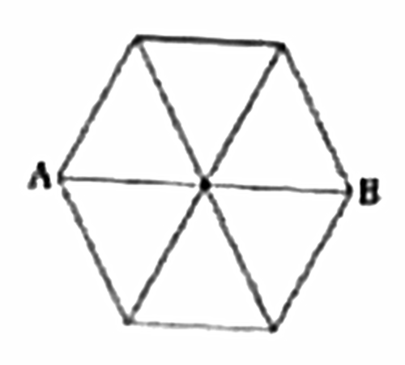
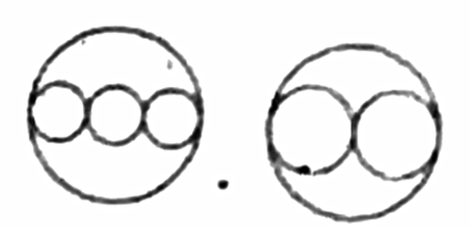

נתון: ab = 4 , a² + b² = 10
(a − b)¹⁰ = ?
הצגת הפתרון
התשובה הסופיתתשובה (3)2⁵
דרך הפתרון והסבר
(a − b)² = a² + b² − 2ab = 10 − 8 = 2 ⇒ (a − b)¹⁰ = ((a − b)²)⁵ = 2⁵.
מוקשים נפוצים
לא צריך למצוא את a ו־b.
נבדקהפתרון תואם את מפתח התשובות של הספר.
נתון: ab = 4 , a² + b² = 10
(a − b)¹⁰ = ?
התשובה הסופיתתשובה (3)2⁵
(a − b)² = a² + b² − 2ab = 10 − 8 = 2 ⇒ (a − b)¹⁰ = ((a − b)²)⁵ = 2⁵.
לא צריך למצוא את a ו־b.
נבדקהפתרון תואם את מפתח התשובות של הספר.
נתון: b < a
איזו מהטענות הבאות נכונה בהכרח?
התשובה הסופיתתשובה (1)b − 2 < a − 1
b < a ⇒ b − 2 < a − 2 < a − 1 תמיד. (2)–(4) נכשלים, למשל עבור a, b שליליים או שברים.
נבדקהפתרון תואם את מפתח התשובות של הספר.

בסרטוט שלפניכם משושה משוכלל בו הועברו כל האלכסונים הראשיים. עכבר יוצא מנקודה A ועליו להגיע לנקודה B כאשר עליו לפעול בהתאם לכללים הבאים:
א. מותר ללכת רק על הקווים.
ב. אסור לחזור על אותו הקו פעמיים.
ג. אסור לעבור באותו הקודקוד פעמיים.
בהתאם לכללים אלו, בכמה דרכים שונות ניתן להגיע מ־A ל־B?
התשובה הסופיתתשובה (4)21
שני מסלולים על ההיקף בלבד. מסלולים דרך המרכז: מגיעים למרכז מקודקוד כלשהו בדרך אחת או יותר, ויוצאים ממנו לקודקוד שממנו ממשיכים ל־B בלי לחזור על קודקוד. ספירה מלאה של כל המסלולים הפשוטים בגרף נותנת 21.
לספור גם מסלולים שעוברים במרכז אחרי כמה צעדים על ההיקף.
נבדקהפתרון תואם את מפתח התשובות של הספר.
נתון: a ≠ −4 , (a + 4)⁵ = −64 · (a + 4)²
a = ?
התשובה הסופיתתשובה (4)−8
a ≠ −4 ⇒ מחלקים ב־(a + 4)²: (a + 4)³ = −64 ⇒ a + 4 = −4 ⇒ a = −8.
מותר לחלק רק כי נתון a ≠ −4.
נבדקהפתרון תואם את מפתח התשובות של הספר.
נתון מעגל שרדיוסו r.
מה מהבאים נכון בהכרח?
התשובה הסופיתתשובה (4)אף אחת מהתשובות אינה נכונה בהכרח
במצולעים משוכללים החסומים באותו מעגל: ככל שיש יותר צלעות, ההיקף והשטח גדלים והצלע קטנה. (1) ההיקף של המתומן גדול מזה של המשובע. (2) צלע המתומן גדולה מצלע המתושע. (3) שטח המתומן גדול משטח המשושה. אף טענה לא נכונה.
נבדקהפתרון תואם את מפתח התשובות של הספר.
נתון: x²y⁴ + 10 = (xy² + 3)² , √66 < y
מה מהבאים מתאר נכונה את תחום הערכים של x?
התשובה הסופיתתשובה (2)0 < x < 1
פותחים: x²y⁴ + 10 = x²y⁴ + 6xy² + 9 ⇒ 6xy² = 1 ⇒ x = 16y². y > √66 ⇒ y² > 16 ⇒ 6y² > 1 ⇒ 0 < x < 1.
נבדקהפתרון תואם את מפתח התשובות של הספר.
לליאור קובייה הוגנת ומטבע שעליו מוטבעות הספרות 1 ו־2. ליאור מטיל את שניהם פעמיים רצופות.
מה הסיכוי שסכום התוצאות שהתקבלו בקובייה ובמטבע לא קטן מ־15?
התשובה הסופיתתשובה (1)5144
סכום המקסימום 6 + 6 + 2 + 2 = 16. סכום מטבעות 4 (סיכוי ¼) דורש קוביות 11 או 12: 336. סכום מטבעות 3 (סיכוי ½) דורש קוביות 12: 136. סה"כ ¼ · 336 + ½ · 136 = 5144.
מטבע עם 1 ו־2: סכום 3 מתקבל בשתי דרכים.
נבדקהפתרון תואם את מפתח התשובות של הספר.
המספר בשאלה נקרא 15 לפי ההתאמה למפתח.
לכל מספר שלם וחיובי a הוגדרו שתי הפעולות הבאות כך:
$(a) = a!(a + 1)! ; #(a) = (a − 1)!a!
$(a − 1)/#(a) = ?
התשובה הסופיתתשובה (1)1
$(a) = a!(a + 1)! = 1a + 1 ⇒ $(a − 1) = 1a. #(a) = 1a. היחס 1.
נבדקהפתרון תואם את מפתח התשובות של הספר.
בחווה 6 תרנגולות המטילות ביצה כל 3 ימים. 5 ימים לאחר ההטלה בוקעים האפרוחים מהביצה. בהנחה שביום הראשון כל התרנגולות הטילו ביצה, כמה אפרוחים יהיו בחווה לאחר 31 ימים?
התשובה הסופיתתשובה (2)54
הטלות בימים 1, 4, 7, …, 31. אפרוח בוקע 5 ימים אחרי ההטלה, ולכן עד יום 31 בקעו ביצי הימים 1, 4, …, 25: 9 הטלות · 6 = 54.
ביצי יום 28 ו־31 עדיין לא בקעו.
נבדקהפתרון תואם את מפתח התשובות של הספר.

בסרטוט שלפניכם שני מעגלים החופפים זה לזה. בתוך כל אחד מהמעגלים חסומים מעגלים קטנים זהים המשיקים זה לזה, משיקים למעגל הגדול ומרכזיהם מונחים על הקוטר של המעגל הגדול בו הם חסומים.
על פי נתונים אלו ונתוני הסרטוט, מה מהבאים נכון בהכרח?
התשובה הסופיתתשובה (3)סכום שטחי שני המעגלים הקטנים החסומים במעגל גדול מסכום שטחי שלושת המעגלים הקטנים החסומים במעגל
שני מעגלים: רדיוס R2 ⇒ 2 · πR²4 = πR²2. שלושה: רדיוס R3 ⇒ 3 · πR²9 = πR²3. שניים > שלושה.
סכום ההיקפים שווה, אבל השטח תלוי בריבוע הרדיוס.
נבדקהפתרון תואם את מפתח התשובות של הספר.
אין במקבץ הזה שאלות שמתאימות לסינון.
אחרי ההגשה תראו ציון, זמן ופתרון מלא לכל שאלה.